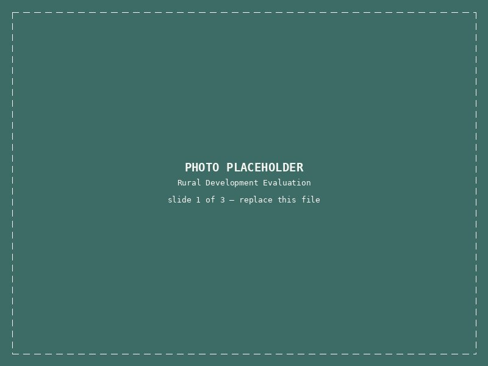
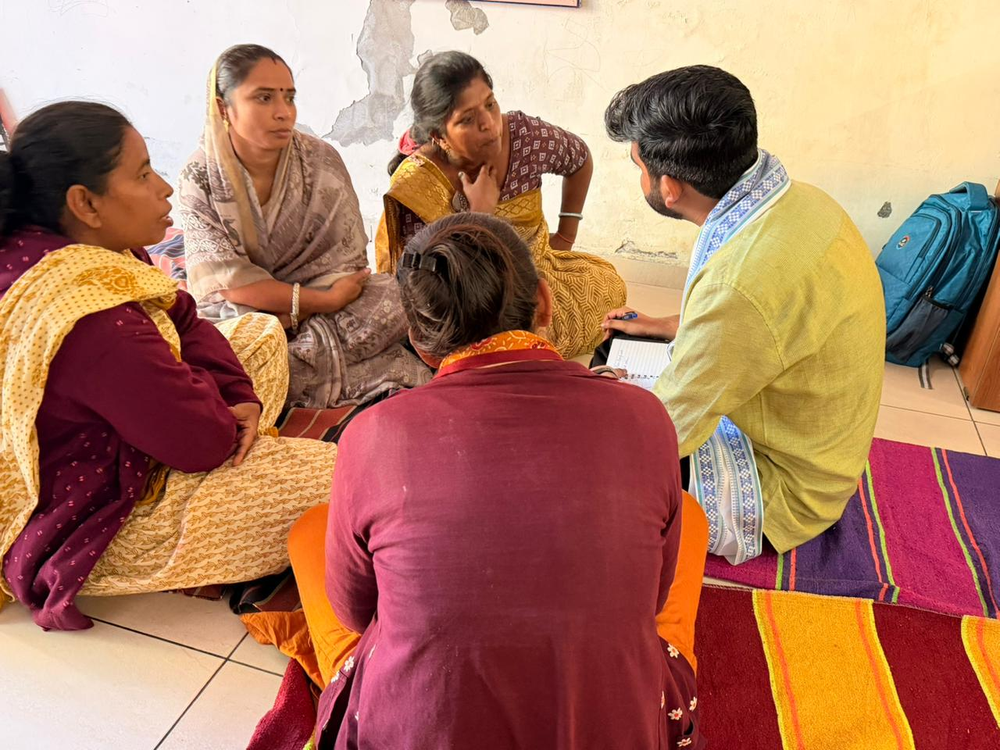
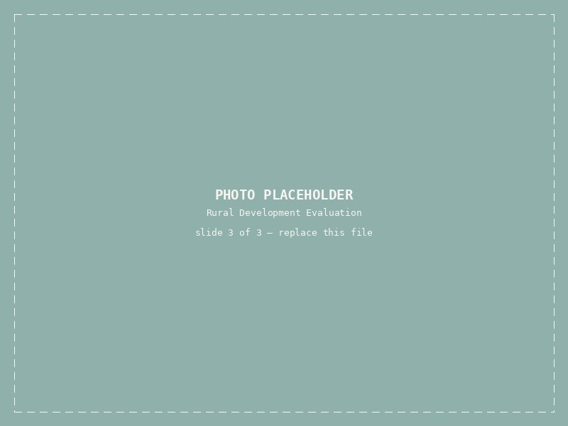

Rural Development Programme Evaluation
Site visits — Rajasthan, Delhi & two other statesUtkarsh helped design and run a large evaluation of a government rural development programme. He built the survey, then travelled to three states for data collection, visiting villages and working directly with local teams. He hired and trained field teams of over 30 people in each district.
Over 6,000 people were surveyed in person. Back in Delhi, he analyzed the data in R and Python and co-wrote the final report, which was presented to the Ministry.
My role: I helped design the evaluation study, built the survey instruments, and managed data collection on the ground.
My experience: This was my first time running research at this scale. Coordinating field teams across three states taught me how much groundwork a good survey needs before a single response comes in.


